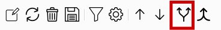
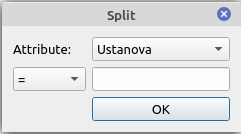
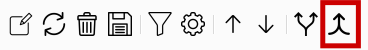
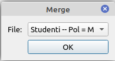

Razdvajanje informacionog resursa se zapocinje klikom na prikaznu ikonicu u paleti
Nakon toga, korisniku ce biti prikazan dijalog u kome treba da odabere na koji nacin zeli da razdvoji podatke. Korisnik bira jedan od ponudjenih atributa, kao i sadrzaj sa kojim treba da se poredi. Dostupni operatori poredjenja za sve atribute su jednako (=), nejednako (!=), kao (like), nije kao (not like). Za brojeve i datume postoje i atributi manje (<), manje ili jednako (<=), vece (>) i vece ili jednako (>=). Klikom na dugme OK potvrdjuje se razdvajanje informacionog resursa.
Spajanje informacionog resursa se zapocinje klikom na prikaznu ikonicu u paleti
Nakon toga, korisniku ce biti prikazan dijalog u kome treba da odabere informacioni resursima s kojim zeli da izvrsi spajanje. Klikom na dugme OK potvrdjuje sa spajanje informacionog resursa.
